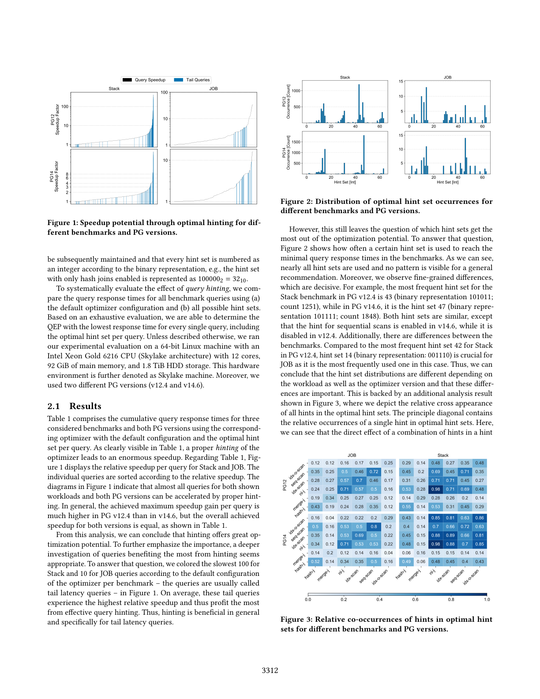
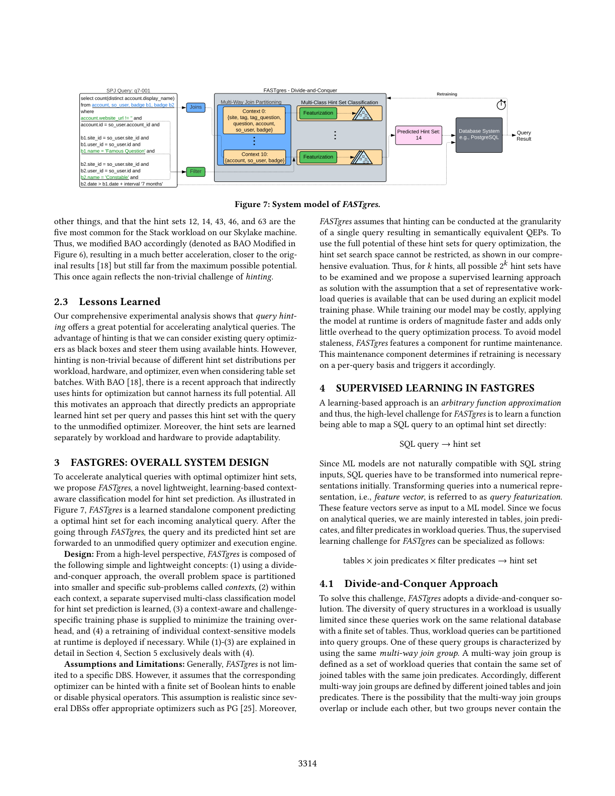
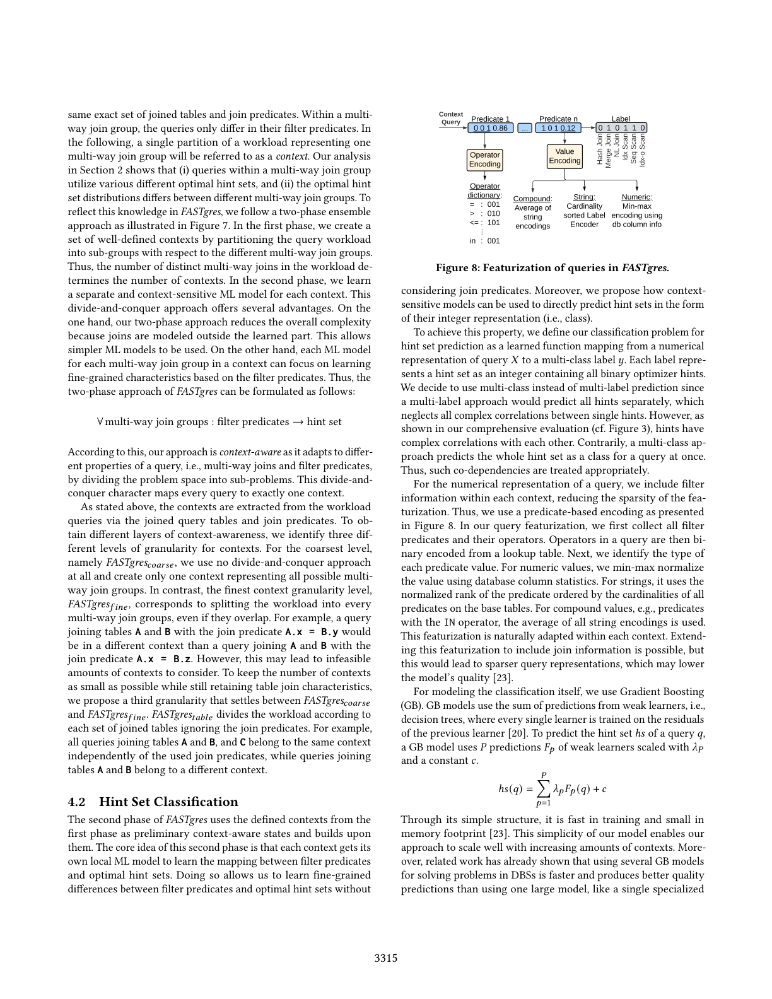

一种轻量、基于学习、上下文感知的分类策略，为每个查询直接预测最优 hint 集以引导代价优化器
传统且成熟的基于代价的查询优化器会枚举每条查询的不同执行计划、用代价评估并选择代价最低者，但最优计划并非总被选中。为把优化器「引导」到正确方向，许多查询优化器提供称为查询优化器提示（hint）的配置参数，可逐查询单独设置。为展示这些 hint 对分析型查询优化的巨大潜力，我们用三个基准与两个 PostgreSQL 版本做了深入评估，并指出查询优化器提示是一个非平凡的挑战。为此本文提出 FASTgres——一种基于学习的、上下文感知的 hint 集预测分类策略。相比相关工作，FASTgres 提供透明、直接的 hint 集预测，并带来一致的性能提升。端到端评估表明，仅通过引导代价优化器，FASTgres 即可将基准运行时间最高降低 3.25×。
随着数据量持续增长，高效的分析型查询处理仍是关键挑战。每个数据库系统的查询编译器把 SQL 转为查询执行计划（QEP），其中查询优化器负责确定最高效的 QEP。尽管研究数十年，查询优化远未解决，最高效计划并非总被执行。对含复杂连接与过滤谓词的分析型查询，最棘手的是：(i) 找到合适的连接顺序，(ii) 为连接选择最佳物理实现。传统优化器用三部分解决：枚举器（枚举搜索空间）、代价模型、基数估计器。
许多系统（PostgreSQL、MySQL、Oracle、SQL Server）提供丰富的配置参数（即 hint）来影响所选 QEP。本文聚焦 PostgreSQL 的六个布尔 hint（扫描：sequential/index/index-only；连接：hash/merge/nested-loop），并在 Stack、JOB、TPC-H（SF=10）上用 PG v12.4 与 v14.6 做全面评估（两版 PG 差异大到近乎两个不同系统）。结果显示：仅用现有 hint 引导优化器（不做内部改动），整体基准响应时间即可加速 1.3×–3.7×（表 1）。
核心贡献：提出 FASTgres——轻量、基于学习、上下文感知的分类策略，为每条 incoming 查询直接预测 hint 组合。FASTgres 显式设计为增强任何可被 hint 引导的关系型代价优化器；输入为纯 SQL，输出为预测 hint 集，随后调用传统代价优化器。它把优化器当作黑盒，无需深度集成，适用面广。关键设计：不为全局学一个模型，而是为每个良定义上下文各学一个模型，以做细粒度预测。因为每组「被连接表集合」构成一个自包含上下文（同上下文查询在连接上同质、仅过滤谓词不同），上下文感知模型能区分细粒度 hint 差异。额外优势：(i) 可用更简单模型；(ii) 每上下文训练开销小；(iii) 每上下文运行时维护成本低，使在线模型更新可行。
在 Stack、JOB、TPC-H 上系统评估。六个布尔 hint 共产生 $2^6=64$ 种 hint 集，每个 hint 集按二进制编号（如仅启用 hash join 为 $100000_2=32_{10}$）。

2.1 结果：表 1 显示恰当 hinting 带来巨大加速；图 1 按相对加速排序，PG v12.4 的单查询最大加速高于 v14.6，但两版整体加速相当。将最慢的尾部查询着色可见：尾部查询平均相对加速最高，从有效 hinting 中获益最多。图 2 显示各 hint 集在达到最小响应时间时的出现频次——几乎所有 hint 集都被用到，无通用推荐模式，且存在决定性差异（如 Stack 在 v12.4 最频繁的是 43，v14.6 是 47）。图 3 的热图进一步显示 hint 组合的共现无通用规律，hinting 依赖查询、PG 版本与底层硬件。把 Stack 查询按连接表集合重分组为 C0–C10（同组仅过滤谓词不同），图 4 显示即便组内 hint 集分布也因 PG 版本而不同；在 CoffeeLake 另一硬件上重做（图 5），分布仍不同——印证 hinting 是非平凡挑战，依赖查询、PG 版本与硬件。
2.2 使用 hint 的已有工作：据我们所知，BAO 是唯一用查询优化器 hint 优化的工作，同样用六个布尔 hint。但 BAO 仅用 5 个硬编码 hint 集（35/43/47/55/63），且基于反馈持续学一个 TCN 代价模型。我们在 Stack 上评估 BAO（图 6）：仅轻微加速，远未触及 hinting 潜力；即便改为适配 Stack 的 hint 集（BAO Modified），仍远不及最大值。这再次印证 hinting 的非平凡性。
2.3 经验教训：hinting 潜力巨大且可把优化器当黑盒；但因各负载/硬件/优化器的 hint 集分布不同（即便按表集合分批也如此），hinting 非平凡。BAO 间接用 hint 却无法充分利用潜力，这促使我们提出直接为每条查询预测合适 hint 集、连同查询传给未修改优化器的方法，并按负载与硬件分别学习 hint 集以提供适应性。
FASTgres 是一个新颖的轻量、基于学习、上下文感知的分类模型，为每条 incoming 分析型查询预测最优 hint 集，随后把查询与预测 hint 集转发给未修改的优化器与执行引擎。

设计理念：(1) 分治，将整体问题空间划分为更小、更具体的子问题（上下文）；(2) 每个上下文内学一个独立的监督多类分类模型；(3) 提供上下文感知、针对挑战的训练阶段以最小化训练开销；(4) 必要时在运行时重训个别上下文敏感模型。假设：优化器可被有限布尔 hint 集引导以启用/禁用物理算子（PG 等满足）；hinting 可在单查询粒度进行且得到语义等价 QEP；hint 集搜索空间不可受限（对 $k$ 个 hint 需考察全部 $2^k$ 个 hint 集），故采用有监督学习，并假设有代表性负载查询可用于显式训练。训练可能昂贵，但运行时应用快几个数量级、几乎不增加优化开销；为避免模型陈旧，FASTgres 提供运行时维护组件，按需逐查询判断并重训。
高层挑战是学一个把 SQL 查询直接映射到最优 hint 集的函数：$\text{SQL query} \to \text{hint set}$。因 ML 模型天然不兼容 SQL 字符串，需先把查询转为数值表示（查询特征化，featurization）。聚焦分析型查询的表、连接谓词、过滤谓词，故监督学习挑战特化为： $\text{tables} \times \text{join predicates} \times \text{filter predicates} \to \text{hint set}$。
负载中查询结构多样性有限（同一关系库、有限表集合），故可划分为查询组：一个「多路连接组（multi-way join group）」含相同连接表集合与连接谓词的查询；组内仅过滤谓词不同。单个分区称为一个上下文（context）。分析表明：(i) 组内查询也用多种最优 hint 集；(ii) 不同组的最优 hint 集分布不同。FASTgres 用两阶段集成：阶段一按多路连接组划分负载得若干上下文（上下文数=不同多路连接数）；阶段二为每个上下文学一个独立的、上下文敏感的 ML 模型。由此：$ \forall\ \text{multi-way join groups}:\ \text{filter predicates} \to \text{hint set}$。提供三档上下文粒度：最粗 FASTgres_coarse（仅一个上下文）；最细 FASTgres_fine（每个多路连接组一个，即使重叠）；折中 FASTgres_table（仅按连接表集合划分、忽略连接谓词）。
第二阶段为每个上下文学一个局部 ML 模型，学「过滤谓词→最优 hint 集」映射，直接以整数表示（类别）预测 hint 集。采用多类（multi-class）而非多标签（multi-label）预测，因后者分别预测各 hint、忽略了 hint 间复杂相关性（见图 3），而多类方法一次性预测整个 hint 集，能恰当处理共依赖。

特征化用基于谓词的编码（图 8）：收集过滤谓词与算子，算子二值编码，数值按库列统计 min-max 归一化，字符串用归一化秩，复合（如 IN）取均值。建模用梯度提升（Gradient Boosting, GB）： $hs(q)=\sum_{p=1}^{P}\lambda_p F_p(q)+c$。GB 训练快、内存小，使方法随上下文增多良好扩展；实验固定决策树数为 100，最大深度设为无限（前缀树可充分刻画谓词复杂度）。
FASTgres 需显式训练阶段（打标签+训练），不与运行时预测冲突，且相比 BAO 等强化学习避免了运行时灾难性遗忘。打标签需为每条训练查询取得最优 hint 集与运行时间；朴素法对每个 hint 集都执行一遍代价高昂，故提出智能标签策略（smart labeling）：每查询设运行时间超时，超过即中止并丢弃该 hint 集；初始用默认 hint 集响应时间作超时，评估各 hint 集时若响应更优则更新超时与当前最优 hint 集——随时间加速。训练数据用分层抽样（stratified sampling）：从每个上下文按比例（如 80-20）分别取样，保证各上下文都有代表查询，小训练集下尤其公平。
监督式 FASTgres 在训练后模型固定，可能因数据/负载漂移而预测不理想。朴素地每查询重训不现实（每重训需对该查询跑全部 $2^k$ 个 hint 集确定最优，负担重）。故提出基于主动学习（active learning）的方法：仅当确有必要时才触发某上下文模型重训。利用分治优势——为每上下文模型提供基于标注最佳时间的超时 $f(\text{times}_c,t_p,t_a):=\max(t_a,\ \text{percentile}(\text{times}_c,t_p))$，检测异常长查询；小 $t_p$ 提高重训率，大 $t_p$ 仅对超过历史所有响应时间的查询重训，$t_a$ 为最小超时绝对值（对全为快查询的上下文有用，取 0.1s 即可）。重训时异常查询被异步标注并加入模型，超时随之更新，带来运行时自适应。此外负载/模式变化表现为上下文变化（多路连接组改变）：新上下文可异步建模型（在建好前预测默认 hint 集，不加速也不减速），不再需要的上下文可删除。
在 Stack（11 上下文）、JOB（33 上下文）、TPC-H（18 上下文）上评估，PG v12.4/v14.6 作黑盒，全部用 Python 实现。
让 FASTgres 用全部基准查询训练（train-to-represent）再预测，结果见表 3：Stack/PG12.4 达 7,760s（2.5×），逼近最优 7,234s（2.6×）；BAO 仅 14,666s（1.29×）。JOB/TPC-H 上 FASTgres 同样接近最优，而 BAO 远不及（甚至 0.84×）。在 CoffeeLake 另一硬件上结果不同但加速相当，说明 FASTgres 能在两 PG 版本、两硬件上挖掘 hinting 潜力。
现实场景无法预知未来查询，故只用负载子集训练。图 9 显示：FASTgres 即便只用少量训练查询也显著且鲁棒地加速（标准差小）；尾部延迟查询（Top-100）加速远高于其余（图 10a）。随机取样时加速不随训练比例单调增（部分上下文未被代表），改用分层抽样后加速随比例稳步提升（图 10b）。
启用运行时维护（每上下文超时检测「关键查询」用于重训），图 9 蓝色线显示显著加速增益，且关键查询数随训练比例下降。考虑重训开销（中止重执行、确定最优 hint 集、调模型）的模拟表明：异步并行确定最优 hint 集，开销不剧增（图 10c），且更频繁重训（95% 分位）带来更高增益。
智能标签使 Stack 平均标注时间 44s/查询（表 2）。图 11 显示：三个连接算子 hint 影响最大；加入扫描类 hint 的边际加速不及其标注时间代价。仅用三个连接 hint 可使标注时间比六个 hint 减少 75%，且重训下性能差异不大——故仅用受限 hint 可行且更优。
数据漂移：Stack 取 2008–2019 不同数据量版本（图 12a/b），即便仅两年数据 FASTgres 仍优于 PG 默认，表现出对陈旧数据的鲁棒性。负载漂移：未见查询可归入现有上下文（预测→异常则标注重训），或落入新上下文（图 12c 显示每新上下文仅需 2 条查询即可超越默认、且少量数据下性能可行）。结论：FASTgres 对数据与负载漂移均鲁棒。
查询优化数十年未解，依赖基数估计精度。传统方法（LEO 用查询反馈、采样、sketch）需紧密集成优化器内部；FASTgres 把优化器当黑盒、与基数估计解耦。ML 倾向用学习模型替换核心功能：基数估计的监督学习需大量标注训练数据且须执行全部查询；强化学习做整体计划优化（BALSA、NEO、BAO）仅在长训练后改善平均性能。TONIC 用基于案例推理改进物理算子选择，但 QEP（尤其连接顺序）不变、属被动式；FASTgres 是主动式、无此限制。Yu 等人的混合优化器把 hint 理解为部分连接顺序的前缀树，与 FASTgres 仅用全局 hint 参数、不依赖具体查询结构不同；但二者都重视「上下文（模板）」并用 PG 标准优化器作回退。
尽管研究多年，布尔查询优化器 hint 能在多大程度上优化分析型查询仍不明朗。本文系统评估了不同 PG 版本，表明优化器 hint 具有巨大加速潜力；但查询 hinting 是非平凡挑战——最优 hint 集分布因负载、优化器与硬件环境而异。为释放该潜力，我们提出 FASTgres：一种轻量、基于学习、上下文感知的分类策略，为每条 incoming 查询直接预测 hint 集。总体上 FASTgres 显著提升基准响应时间，且仅通过用预测的学习型 hint 引导传统代价优化器即可实现。